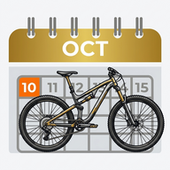

Giro
Scarica l'app di prova
Questo è l'APK di prova (build «debug») di Giro, per chi vuole provare le novità prima della versione sul Play Store.
L'indirizzo di download non cambia mai: girocalendar.pages.dev/girocalendar-debug.apk porta sempre all'ultima versione.
Come si installa
- Apri questa pagina dal telefono Android e tocca Scarica l'APK.
- Apri il file scaricato. Se Android lo chiede, consenti l'installazione di app da questa fonte (una volta sola).
- Tocca Installa. L'app si chiama Giro (debug) e si installa accanto alla versione del Play Store, senza sostituirla.
Per aggiornare basta scaricare di nuovo l'APK e installarlo sopra: i dati restano. Il login con Google funziona come nella versione normale.
Cosa c'è di nuovo
Caricamento…
Cos'è Giro
Giro è il calendario delle uscite in bici del tuo gruppo: MTB, strada, gravel, cicloturismo. Si apre un calendario digitando il suo codice, senza bisogno di accedere; chi organizza accede con Google e gestisce le uscite insieme ai collaboratori.
- Uscite con ritrovo, difficoltà, note, tracce GPX, foto e audio
- Mappa con trail, zone e punti di interesse, anche in 3D
- Contatti, officina, mercatino e scheda Emergenza
È una versione di prova: può contenere difetti. Se trovi qualcosa che non va, segnalalo a chi ti ha mandato il link.